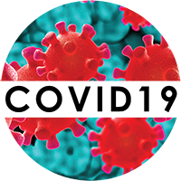

<ion-app>
  <ion-split-pane>
    <ion-menu type="overlay">
      <ion-content fullscreen>
        <div class="sidemenu-ion-content">
          <ion-list class="sidemenu-ion-list">

            <ion-item class="sidemenu-ion-list-item">
              
            </ion-item>

            <!-- <ion-menu-toggle auto-hide="false">

              <ion-item class="sidemenu-ion-list-item" [routerDirection]="'root'" routerLink="/home">
                <ion-icon slot="start" color="light" name="home"></ion-icon>
                <ion-label color="light">
                  সব খবর
                </ion-label>
              </ion-item>

            </ion-menu-toggle> -->

            <!-- Item with Children -->

            <ion-item button class="sidemenu-ion-list-item" (click)="openMenuList()" [class.parent-active]="subMenu.open" detail="false"
              auto-hide="false">
              <ion-icon slot="start" name="arrow-forward" color="light" *ngIf="!subMenu.open"></ion-icon>
              <ion-icon slot="start" name="arrow-down" color="light" *ngIf="subMenu.open"></ion-icon>
              <ion-label color="light">News</ion-label>
            </ion-item>

            <!-- Children List for clicked Item -->          
            <ion-list id="menuList" class="sidemenu-ion-list-item" *ngIf="subMenu.open" style="height: 0;overflow-y: auto;-webkit-transition: height 2s; transition: height 1s;">
              <ion-menu-toggle>
                <ion-item class="sub-item" *ngFor="let s of subRoutes"  (click)="openHome(s.id)">
                  <ion-icon class="big" src="{{s.logo}}"></ion-icon>
                  <ion-label>
                    {{s.label}}
                  </ion-label>
                </ion-item>              
<!--                 <ion-item class="sub-item"  *ngFor="let s of subRoutes" [routerDirection]="'root'" routerLink={{s.routeOption}}>
                  <ion-icon class="big" src="{{s.logo}}"></ion-icon>
                  <ion-label>
                    {{s.routeName}}
                  </ion-label>
                </ion-item> -->

              </ion-menu-toggle>
            </ion-list>          


            <ion-menu-toggle>          
              <!-- <ion-item class="sidemenu-ion-list-item" [routerDirection]="'root'" routerLink="/sources">
                <ion-icon slot="start" color="light" name="cube"></ion-icon>
                <ion-label color="light">
                  Source
                </ion-label>
              </ion-item> -->
<!--               <ion-item class="sidemenu-ion-list-item" [routerDirection]="'root'" routerLink="/livetv">
                <ion-icon slot="start" color="light" name="tv"></ion-icon>
                <ion-label color="light">
                  পত্রিকা ও লাইভ টিভি
                </ion-label>
              </ion-item> -->
              <ion-item class="sidemenu-ion-list-item" [routerDirection]="'root'" routerLink="/about">
                <ion-icon slot="start" color="light" name="md-information-circle"></ion-icon>
                <ion-label color="light">
                  About Us
                </ion-label>
              </ion-item>

            </ion-menu-toggle>
          </ion-list>
        </div>
      </ion-content>
      <ion-footer class="sidemenu-ion-footer">
        <ion-label class="copyright-text" color="dark">© Dream Diver 2020 | Version 0.0.1</ion-label>
      </ion-footer>
    </ion-menu>
    <ion-router-outlet main></ion-router-outlet>
  </ion-split-pane>
</ion-app>